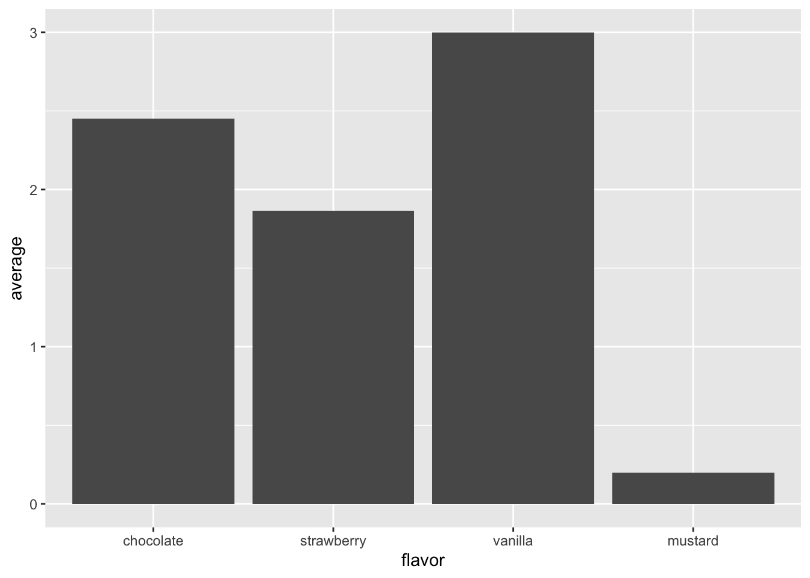

Chapter 7 Intellectual Debt
We have accumulated some intellectual debt in the previous lessons, and we should clear this burden from our conscience before we go on to new topics.
7.1 Learning Objectives
- Explain what the formula operator
~was created for and what other uses it has. - Describe and use
.,.x,.y,..1,..2`, and other convenience parameters. - Define copy-on-modify and explain its use in R.
7.2 Why shouldn’t I use setwd?
Because reasons.
But…
No. Use the here package instead to create paths that are relative to your current location:
here by itself: /Users/gvwilson/tidynomiconhere("book.bib"): /Users/gvwilson/tidynomicon/book.bibhere("etc", "common.R"): /Users/gvwilson/tidynomicon/etc/common.R7.3 What the hell are factors?
Another feature of R that doesn’t have an exact analog in Python is factors. In statistics, a factor is a categorical variable such as “flavor”, which can be “vanilla”, “chocolate”, “strawberry”, or “mustard”. Factors can be represented as strings, but storing the same string many times wastes space and is inefficient (since comparing strings takes longer than comparing numbers). R therefore stores each string once and gives it with a numeric key, so that internally, “mustard” is the number 4 in the lookup table for “flavor”, but is presented as “mustard” rather than 4.
This is useful, but brings with it some problems:
- On the statistical side, it encourages people to put messy reality into tidy but misleading boxes. For example, it’s unfortunately still common for forms to require people to identify themselves as either “male” or “female”, which is scientifically incorrect. Similarly, census forms that ask questions about racial or ethnic identity often leave people scratching their heads, since they don’t belong to any of the categories offered.
- On the computational side, some functions in R automatically convert strings to factors by default. This makes sense when working with statistical data—in most cases, a column in which the same strings are repeated many times is categorical—but it is usually not the right choice in other situations. This has surprised enough people the years that the tidyverse goes the other way and only creates factors when asked to.
Let’s work through a small example. Suppose we’ve read a CSV file and wound up with this table:
raw <- tribble(
~person, ~flavor, ~ranking,
"Lhawang", "strawberry", 1.7,
"Lhawang", "chocolate", 2.5,
"Lhawang", "mustard", 0.2,
"Khadee", "strawberry", 2.1,
"Khadee", "chocolate", 2.4,
"Khadee", "vanilla", 3.9,
"Haddad", "strawberry", 1.8,
"Haddad", "vanilla", 2.1
)
raw# A tibble: 8 x 3
person flavor ranking
<chr> <chr> <dbl>
1 Lhawang strawberry 1.7
2 Lhawang chocolate 2.5
3 Lhawang mustard 0.2
4 Khadee strawberry 2.1
5 Khadee chocolate 2.4
6 Khadee vanilla 3.9
7 Haddad strawberry 1.8
8 Haddad vanilla 2.1Let’s aggregate using flavor values so that we can check our factor-based aggregating later:
`summarise()` ungrouping output (override with `.groups` argument)# A tibble: 4 x 3
flavor number average
<chr> <int> <dbl>
1 chocolate 2 2.45
2 mustard 1 0.2
3 strawberry 3 1.87
4 vanilla 2 3 It probably doesn’t make sense to turn person into factors,
since names are actually character strings,
but flavor is a good candidate:
# A tibble: 8 x 3
person flavor ranking
<chr> <fct> <dbl>
1 Lhawang strawberry 1.7
2 Lhawang chocolate 2.5
3 Lhawang mustard 0.2
4 Khadee strawberry 2.1
5 Khadee chocolate 2.4
6 Khadee vanilla 3.9
7 Haddad strawberry 1.8
8 Haddad vanilla 2.1We can still aggregate as we did before:
`summarise()` ungrouping output (override with `.groups` argument)# A tibble: 4 x 3
flavor number average
<fct> <int> <dbl>
1 chocolate 2 2.45
2 mustard 1 0.2
3 strawberry 3 1.87
4 vanilla 2 3 We can also impose an ordering on the factor’s elements:
raw <- raw %>%
mutate(flavor = fct_relevel(flavor, "chocolate", "strawberry", "vanilla", "mustard"))
raw# A tibble: 8 x 3
person flavor ranking
<chr> <fct> <dbl>
1 Lhawang strawberry 1.7
2 Lhawang chocolate 2.5
3 Lhawang mustard 0.2
4 Khadee strawberry 2.1
5 Khadee chocolate 2.4
6 Khadee vanilla 3.9
7 Haddad strawberry 1.8
8 Haddad vanilla 2.1This changes the order in which they are displayed after grouping:
`summarise()` ungrouping output (override with `.groups` argument)# A tibble: 4 x 3
flavor number average
<fct> <int> <dbl>
1 chocolate 2 2.45
2 strawberry 3 1.87
3 vanilla 2 3
4 mustard 1 0.2 And also changes the order of bars in a bar chart:
raw %>%
group_by(flavor) %>%
summarize(number = n(), average = mean(ranking)) %>%
ggplot(mapping = aes(x = flavor, y = average)) +
geom_col()`summarise()` ungrouping output (override with `.groups` argument)
To learn more about how factors work and how to use them when analyzing categorical data, please see this paper by McNamara and Horton.
7.4 How do I refer to various arguments in a pipeline?
When we put a function in a pipeline using %>%,
that operator calls the function with the incoming data as the first argument,
so data %>% func(arg) is the same as func(data, arg).
This is fine when we want the incoming data to be the first argument,
but what if we want it to be second? Or third?
One possibility is to save the result so far in a temporary variable and then start a second pipe:
data <- tribble(
~left, ~right,
1, NA,
2, 20
)
empties <- data %>%
pmap_lgl(function(...) {
args <- list(...)
any(is.na(args))
})
data %>%
transmute(id = row_number()) %>%
filter(empties) %>%
pull(id)[1] 1This builds a logical vector empties with as many entries as data has rows,
then filters data according to which of the entries in the vector are TRUE.
A better practice is to use the parameter name .,
which means “the incoming data”.
In some functions (e.g., a two-argument function being used in map)
we can also use .x and .y for the first and second arguments,
and for more arguments,
we can use ..1, ..2, and so on (with two dots at the front):
data %>%
pmap_lgl(function(...) {
args <- list(...)
any(is.na(args))
}) %>%
tibble(empty = .) %>%
mutate(id = row_number()) %>%
filter(empty) %>%
pull(id)[1] 1In this model,
we create the logical vector,
then turn it into a tibble with one column called empty
(which is what empty = . does in tibble’s constructor).
After that,
we add another column with row numbers,
filter,
and pull out the row numbers.
And while we’re here:
row_number doesn’t do what its name suggests.
We’re better off using rowid_to_column:
# A tibble: 2 x 3
rowid left right
<int> <dbl> <dbl>
1 1 1 NA
2 2 2 207.5 I thought you said that R encouraged functional programming?
I did. Here is a function that reads a file and returns one of its columns:
col_from_file <- function(filename, colname) {
dat <- readr::read_csv(filename)
dat[colname]
}
person_filename <- here::here("data", "person.csv")
col_from_file(person_filename, "family_name")# A tibble: 5 x 1
family_name
<chr>
1 Dyer
2 Pabodie
3 Lake
4 Roerich
5 Danforth Note that the column name must be passed as a quoted string; Chapter 6 will show us how to pass unquoted column names.
We might occasionally want to allow the user to specify
what values in the file are to be considered NAs.
This small addition allows us to do that,
while keeping the empty string and the string "NA" as defaults:
col_from_file <- function(filename, colname, na = c("", "NA")) {
dat <- readr::read_csv(filename, na = na)
dat[colname]
}
col_from_file(person_filename, "family_name", c("Dyer"))# A tibble: 5 x 1
family_name
<chr>
1 <NA>
2 Pabodie
3 Lake
4 Roerich
5 Danforth We can also allow the user to specify any number of columns
by capturing “extra” parameters in ...
and passing that value directly to dplyr::select:
cols_from_file <- function(filename, ..., na = c("", "NA")) {
readr::read_csv(filename, na = na) %>%
dplyr::select(...)
}
cols_from_file(person_filename, personal_name, family_name)# A tibble: 5 x 2
personal_name family_name
<chr> <chr>
1 William Dyer
2 Frank Pabodie
3 Anderson Lake
4 Valentina Roerich
5 Frank Danforth Now that we can create functions,
we can use the tools in the purrr library to wield them.
purrr::map applies a function to each value in a vector in turn
and returns a list:
is_long_name <- function(name) {
stringr::str_length(name) > 4
}
person <- read_csv(here::here("data", "person.csv"))Parsed with column specification:
cols(
person_id = col_character(),
personal_name = col_character(),
family_name = col_character()
)[[1]]
[1] FALSE
[[2]]
[1] TRUE
[[3]]
[1] FALSE
[[4]]
[1] TRUE
[[5]]
[1] TRUEFor small calculations,
we will define the function where it is used—this is sometimes called
an anonymous function
since it isn’t given a name.
We will also use purrr::map_lgl
so that the result of the call is a logical vector rather than a list.
Similarly-named functions will give us numbers, character strings, and so on:
[1] FALSE TRUE FALSE TRUE TRUELittle functions like this are so common
that purrr allows us to use write them as formulas using the ~ operator with.x` as a shorthand for the value from the vector being processed:
[1] "DYER" "PABODIE" "LAKE" "ROERICH" "DANFORTH"Other functions in purrr let us work on two vectors at once:
[1] "Dyer_William" "Pabodie_Frank" "Lake_Anderson"
[4] "Roerich_Valentina" "Danforth_Frank" If we need to collapse the result to a single value
(e.g., to use in if)
we have purrr::some and purrr::every:
[1] FALSE7.5.1 Modify specific elements of a list:
[1] "William" "FRANK" "Anderson" "VALENTINA" "Frank" Use modify_if to upper-case names that are greater than “M”.
7.5.2 Create an acronym:
[1] "WFAVF"Explain why using stringr::str_c(stringr::str_sub(.x, 1, 1), stringr::str_sub(.y, 1, 1)) doesn’t work.
7.5.3 Create intermediate values:
purrr::accumulate(person$personal_name, ~stringr::str_c(.x, stringr::str_sub(.y, 1, 1)), .init = "")[1] "" "W" "WF" "WFA" "WFAV" "WFAVF"Modify this so that the initial empty string isn’t in the final result.
7.6 How does R give the appearance of immutable data?
Another feature of R that can surprise the unwary is its use of copy-on-modify to make data appear immutable (a jargon term meaning “cannot be changed after creation”). If two or more variables refer to the same data and that data is updated via one variable, R automatically makes a copy of the data so that the other variable’s value doesn’t change. Here’s a simple example:
first <- c("red", "green", "blue")
second <- first
print(glue("before modification, first is {paste(first, collapse='-')} and second is {paste(second, collapse='-')}"))before modification, first is red-green-blue and second is red-green-bluefirst[[1]] <- "sulphurous"
print(glue("after modification, first is {paste(first, collapse='-')} and second is {paste(second, collapse='-')}"))after modification, first is sulphurous-green-blue and second is red-green-blueThis is true of nested structures as well:
first <- tribble(
~left, ~right,
101, 202,
303, 404)
second <- first
first$left[[1]] <- 999
print("first after modification")[1] "first after modification"# A tibble: 2 x 2
left right
<dbl> <dbl>
1 999 202
2 303 404[1] "second after modification"# A tibble: 2 x 2
left right
<dbl> <dbl>
1 101 202
2 303 404In this case,
the entire left column of first has been replaced:
tibbles (and data frames) are stored as lists of vectors,
so changing any value in a column triggers construction of a new column vector.
We can watch this happen using the tracemem function,
which shows us where objects live in the computer’s memory:
[1] "<0x7ff59e4b7f88>"tracemem[0x7ff59e4b7f88 -> 0x7ff59d527b08]: eval eval withVisible withCallingHandlers handle timing_fn evaluate_call <Anonymous> evaluate in_dir block_exec call_block process_group.block process_group withCallingHandlers process_file <Anonymous> <Anonymous> do.call eval eval eval eval eval.parent local
tracemem[0x7ff59d527b08 -> 0x7ff59d50d788]: eval eval withVisible withCallingHandlers handle timing_fn evaluate_call <Anonymous> evaluate in_dir block_exec call_block process_group.block process_group withCallingHandlers process_file <Anonymous> <Anonymous> do.call eval eval eval eval eval.parent local
tracemem[0x7ff59d50d788 -> 0x7ff59d50e688]: tbl_subassign_col tbl_subassign $<-.tbl_df $<- eval eval withVisible withCallingHandlers handle timing_fn evaluate_call <Anonymous> evaluate in_dir block_exec call_block process_group.block process_group withCallingHandlers process_file <Anonymous> <Anonymous> do.call eval eval eval eval eval.parent local
tracemem[0x7ff59d50e688 -> 0x7ff59d50e8c8]: set_tibble_class tbl_subassign_col tbl_subassign $<-.tbl_df $<- eval eval withVisible withCallingHandlers handle timing_fn evaluate_call <Anonymous> evaluate in_dir block_exec call_block process_group.block process_group withCallingHandlers process_file <Anonymous> <Anonymous> do.call eval eval eval eval eval.parent local
tracemem[0x7ff59d50e8c8 -> 0x7ff59d50e9c8]: vectbl_restore tbl_subassign $<-.tbl_df $<- eval eval withVisible withCallingHandlers handle timing_fn evaluate_call <Anonymous> evaluate in_dir block_exec call_block process_group.block process_group withCallingHandlers process_file <Anonymous> <Anonymous> do.call eval eval eval eval eval.parent local This rather cryptic output tell us the address of the tibble,
then notifies us of changes to the tibble and its contents.
We can accomplish something a little more readable using pryr::address
(i.e., the address function from the pryr package):
Registered S3 method overwritten by 'pryr':
method from
print.bytes Rcppleft column is initially at 0x7ff59d528188first$left[[2]] <- 888
print(glue("after modification, the original column is still at {pryr::address(left)}"))after modification, the original column is still at 0x7ff59d528188but the first column is at 0x7ff5a04f16c8(We need to use the alias temp because address(first$left) doesn’t work:
the argument to address needs to be a variable name.)
R’s copy-on-modify semantics is particularly important when writing functions. If we modify an argument inside a function, that modification isn’t visible to the caller, so even functions that appear to modify structures usually don’t. (“Usually”, because there are exceptions, but we must stray off the path to find them.)
7.7 What else should I worry about?
Ralph Waldo Emerson once wrote, “A foolish consistency is the hobgoblin of little minds.” Here, then, are few of the hobgoblins I’ve encountered on my journey through R.
7.7.1 The order function
The function order generates indices to pull values into place rather than push them,
i.e.,
order(x)[i] is the index in x of the element that belongs at location i.
For example:
[1] 4 2 1 3shows that the value at location 4 (the "a") belongs in the first spot of the vector;
it does not mean that the value in the first location (the "g") belongs in location 4.
This convention means that something[order(something)] does the right thing:
[1] "a" "c" "g" "t"7.7.2 One of a set of values
The function one_of is a handy way to specify several values for matching
without complicated Boolean conditionals.
For example,
gather(data, key = "year", value = "cases", one_of(c("1999", "2000")))
collects data for the years 1999 and 2000.
7.7.3 | and & are not the same as || and &&
Let’s try some experiments:
TRUE_TRUE <- c(TRUE, TRUE)
TRUE_FALSE <- c(TRUE, FALSE)
FALSE_TRUE <- c(FALSE, TRUE)
print(glue("TRUE_TRUE & TRUE_FALSE: {paste(TRUE_TRUE & TRUE_FALSE, collapse = ' ')}"))TRUE_TRUE & TRUE_FALSE: TRUE FALSETRUE_TRUE & FALSE_TRUE: FALSE TRUETRUE_TRUE && TRUE_FALSE: TRUETRUE_TRUE && FALSE_TRUE: FALSEThe difference is that & always returns a vector result after doing element-by-element conjunction,
while && returns a scalar result.
This means that & is almost always what we want to use when working with data.
7.7.4 Functions and columns
There is a function called n.
It’s not the same thing as a column called n.
I only made this mistake a dozen times.
# A tibble: 1 x 1
total
<dbl>
1 30# A tibble: 1 x 1
total
<int>
1 27.8 Key Points
- Don’t use
setwd. - The formula operator
~delays evaluation of its operand or operands. ~was created to allow users to pass formulas into functions, but is used more generally to delay evaluation.- Some tidyverse functions define
.to be the whole data,.xand.yto be the first and second arguments, and..Nto be the N’th argument. - These convenience parameters are primarily used when the data being passed to a pipelined function needs to go somewhere other than in the first parameter’s slot.
- ‘Copy-on-modify’ means that data is aliased until something attempts to modify it, at which point it duplicated, so that data always appears to be unchanged.